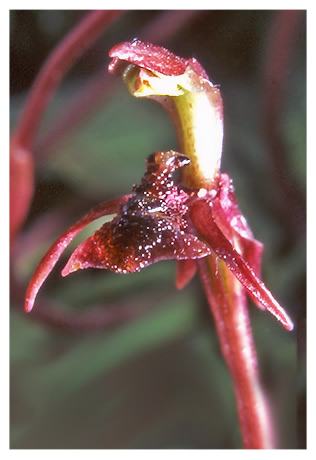
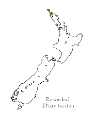

|  |
|
Chiloglottis formicifera
 Plant: stem to 8cm tall, leaf margins distinctly wavy Flowers: reddish or green with a pale column. Labellum with dark hairy tubercles reaching the tip of midlobe, mimicking a female wasp. Flowering: September. Habitat: known only from near Kaitaia over a century ago. Conservation: vagrant from Australia, now thought to be extinct in NZ. Notes: photographs are of Australian plants. Key features: labellum appearing to hold a wasp. |
| Photo: Eric Scanlen |
| Bird Orchids |